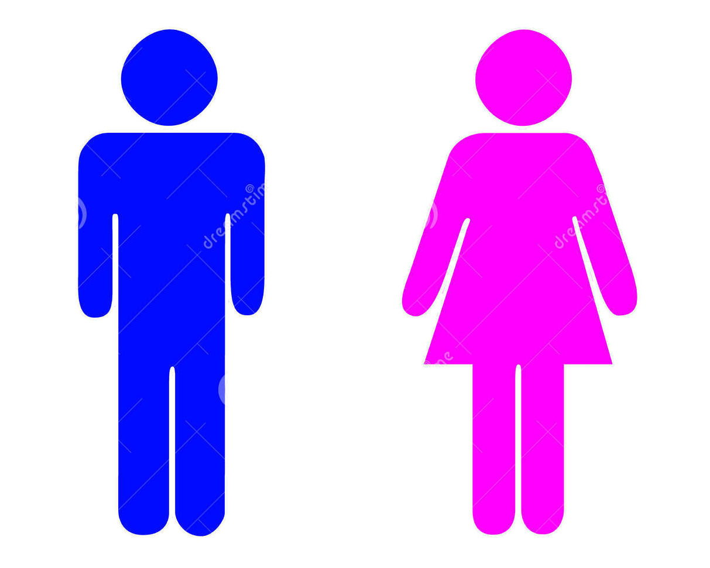

Página web con un formulario de figuras geometricas
El metodo calcula el área y perímetro de 4 figuras
Cuadrado, Rectangulo, Circulo y Poligono regular
Formulario que calcula el numero de hombres y mujeres por estado
El metodo utiliza 3 listas para determinar estado de pertenencia y genero
Se muestra todo en una tabla con los datos
Ejemplo recuperado de la exposición de Manuel Adan
El ejemplo trae datos de un archivo de texto
La lectura de estos datos se hace de forma asincrona
Ejemplo recuperado de la exposición de Manuel Adan
El ejemplo trae datos de un archivo JSON
La lectura de estos datos se hace de forma asincrona
Conectar a la misma base de datos pero usando C#
El proyecto se encuentra en la raíz del proyecto de Java
El proyecto debe ejecutarse aparte
Código de ejemplo que pertenece a la tarea de Apis de Geolocalización
Código que se puede copiar en la página de maps de google Api de google maps que falta de credenciales Página que muestra página con posición en longitud y latitudPágina web con las ediciones de la tabla persona
Seleccionar, Editar, Eliminar y Modificar
El metodo utiliza una tabla para todas las acciones
Página web con un formulario de figuras geometricas
El metodo se encuentra en la sección de segundo parcial
Detalles en la sección de segundo parcial
Clase java que lee un archivo
La clase se encuentra en el paquete ejemplosCodigo y es LecturaFichero.java